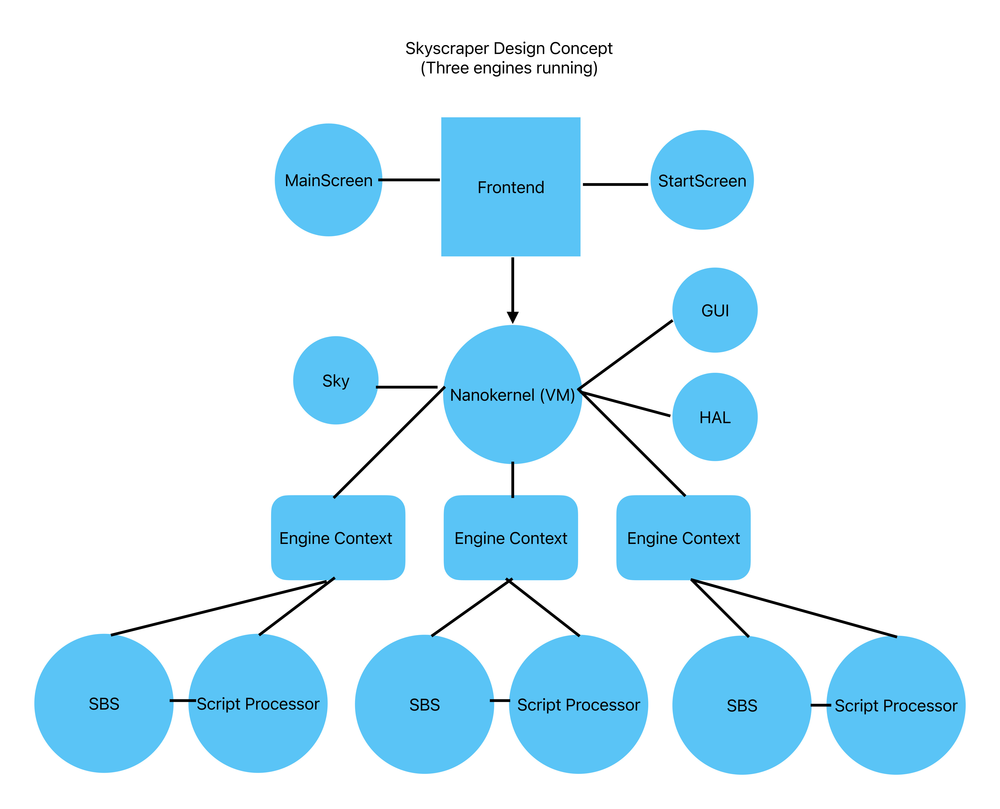

Working with the Skyscraper source code can
be intimidating at first, but if you're familiar with C++, the
code has been formatted to be easy to read and hopefully
understand.
The following diagram shows a birds-eye view of the simulator,
when three sim engines are running.

Skyscraper's source code is divided class-wise in order to
create layers of abstraction in the code. This makes it
relatively easy to create object-related code in C++. In
the image above, each major component is in a subfolder in the
"src" directory. The SBS engine, as an example, is in
the "src/sbs" folder. Skyscraper's frontend is
relatively small, and is mainly used as a wxWidgets frontend
to the simulator, the ability to add other frontends is
possible.
Frontend
Skyscraper's frontend is is both a small
wxWidgets application and separately (if wxWidgets is not
used), a native Ogre frontend for Skyscraper. It is used
for the startup screen, initializing the simulator, it's
initial objects, and the initial wxWidgets windowing
framework.
VM
(Virtual Manager)
VM, or Virtual Manager, is a simulator management
frontend, designed to manage simulator engine instances.
It operates in a similar way to a nanokernel or hypervisor, in
that it is a monitor and environment for the simulator engines
to run on. VM is responsible for creating simulator
engine instances, shutting down engines, running sim engines
in parallel, and moving between sim engines. It also
manages the client components, such as the GUI and HAL.
VM manages Engine Contexts, which are the basic environments
that host the sim engines and script processors.
GUI
The GUI component is the majority of the
wxWidgets windowing code, used for the simulator's windows and
dialogs. This component is a client of the VM (Virtual
Manager) component.
HAL
The HAL (Hardware Abstraction Layer)
component is responsible for all hardware library-related
functions, such as graphics and sound, currently for the
frontend. In the future this will also handle all
related functions for SBS, currently SBS does most of the same
functionality separately. This component is a client of
the VM (Virtual Manager) component.
Script Processor
The Script Processor component is not only the script
interpreter, but also demonstrates how to perform the C++
equivalents of script code. The script processor is
responsible for translating script commands into C++
functions. The language is loosely based on the
TrueVision3D graphics engine syntax (Visual Basic).
OpenXR
The OpenXR component is an experimental
Virtual Reality feature. Skyscraper currently supports
VR headsets, but doesn't yet support hand controls and some
other things like on-screen displays.
Scalable Building
Simulator (SBS)
The Scalable Building Simulator, or SBS, is
a simulation engine designed with vertical simulation in
mind. SBS was designed to simulate a single building in
it's entirety, multiple SBS instances can be run together in
parallel to create cities. SBS is a client of the VM
(Virtual Manager) component. It runs within an
environment called an Engine Context, which is created and
managed by the VM system. An engine context is the
combination of an instance of SBS and a Script Processor,
together in a context.
PolyMesh
PolyMesh, Skyscraper's geometry processor,
is a subsystem of SBS. It was developed starting in 2010
to replace the Crystal Space game engine's ThingMesh system,
which Skyscraper Alpha 7 and earlier used. ThingMesh was
removed from Crystal Space, prompting the creation of a new
geometry processor, followed by Skyscraper moving over to the
Ogre graphics engine in late 2010, with the PolyMesh switch
having made the Ogre transition possible. PolyMesh, via
the DynamicMesh system, generates 3D geometry and render
buffers, that are submitted to Ogre for rendering, and are
uploaded to the graphics card in batches.
{kind=link}